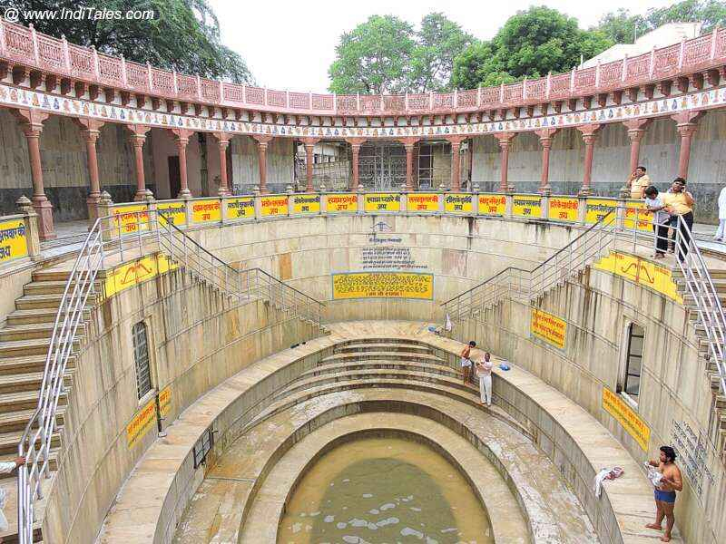
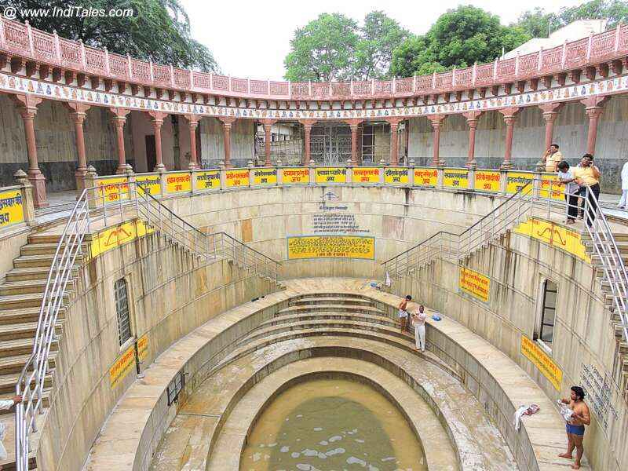

ओम जय श्री श्याम हरे, बाबा जय श्री श्याम हरे।
खाटू धाम विराजत, अनुपम रूप धरे।।
ओम जय श्री श्याम हरे.. बाबा जय श्री श्याम हरे।।😀😀😀😀
रतन जड़ित सिंहासन,सिर पर चंवर ढुरे।
तन केसरिया बागो, कुण्डल श्रवण पड़े।।
ओम जय श्री श्याम हरे.. बाबा जय श्री श्याम हरे।।😀😀😀😀
गल पुष्पों की माला, सिर पार मुकुट धरे।
खेवत धूप अग्नि पर, दीपक ज्योति जले।।
ओम जय श्री श्याम हरे.. बाबा जय श्री श्याम हरे।।😀😀😀😀
मोदक खीर चूरमा, सुवरण थाल भरे।
सेवक भोग लगावत, सेवा नित्य करे।।
ओम जय श्री श्याम हरे.. बाबा जय श्री श्याम हरे।।😀😀😀😀
झांझ कटोरा और घडियावल, शंख मृदंग घुरे।
भक्त आरती गावे, जय-जयकार करे।।
ओम जय श्री श्याम हरे.. बाबा जय श्री श्याम हरे।।😀😀😀😀
जो ध्यावे फल पावे, सब दुःख से उबरे।
सेवक जन निज मुख से, श्री श्याम-श्याम उचरे।।
ओम जय श्री श्याम हरे.. बाबा जय श्री श्याम हरे।।😀😀😀😀
श्री श्याम बिहारी जी की आरती, जो कोई नर गावे।
कहत भक्त-जन, मनवांछित फल पावे।।
ओम जय श्री श्याम हरे.. बाबा जय श्री श्याम हरे।।😀😀😀😀
जय श्री श्याम हरे, बाबा जी श्री श्याम हरे।
निज भक्तों के तुमने, पूरण काज करे।।
ओम जय श्री श्याम हरे.. बाबा जय श्री श्याम हरे।।😀😀😀😀
ओम जय श्री श्याम हरे, बाबा जय श्री श्याम हरे।
खाटू धाम विराजत, अनुपम रूप धरे।।
ओम जय श्री श्याम हरे.. बाबा जय श्री श्याम हरे।।😀😀😀😀
→ Baba Bless You ←
.jpg)
ॐ श्री श्याम देवाय नम:
KHATU SHYAM JI BEST PLACES
m.jpg) 

m.png)
KHATU SHYAM JI NEARER BEST PLACES
(1)Salasar Balaji
(2)Golden Water Park

(3)Nahargargh Jaipur

(4)Jaipur Night Market

· Some Famous Singes Khatu shyam Bhajan sandhaya ·
- Kanhiya Mittal
- Sheetal pandey
- Anjali Dwivedi
- Hemant Brijwasi
- Raj Pareek
- Sanjay Mittal
Google Map For Checking Direction
· Click Here ·Shayam Aarti